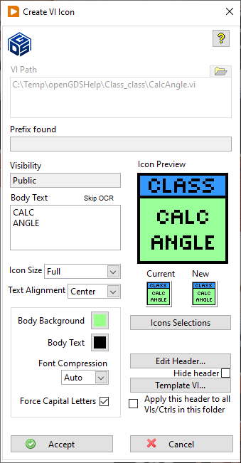

Create VI Icon
Dialog Create VI Icon
To open the Create VI Icon Dialog Box , open a VI and select Tools>> GOOP>> Create VI Icon. This tool always operates on the VI icon of the VI it was launched from.
Create VI Icon helps you to create an manage an icon template for a group of VI:s giving them the same header and coloring. Create VI Icon operates both on standard VI:s and VI:s of a lvclass.
The tool supports text based icons. You can define a header text and color and have it used for all VI:s placed in the same folder. In the body part of the VI icon you write an abbreviation of the VI name. When launched for a VI of an lvclass you cannot edit the header part since it is already defined for the class.
To use this tool you have to save the VI first and then launch Create VI Icon from the opened VI:s Tools menu.
Dialog Box Options
VI Path |
Shows the path to the current VI. |
Prefix found |
Indicates if a prefix was found for the current VI or a Template VI. |
Visibility |
Indicates the visibility of the current VI. |
Body Background |
Select the color for the body background |
Body Text |
Write the text to appear in the lower (body) part of the icon. |
Font Compression |
Select the compression for the body text. Auto changes the text size automatically and add rows to fit the text into the body area in the best way. |
Force Capital Letters |
Check the box if you want the body text to use only capital letters. |
Icon Preview |
Shows a preview of the icon |
Current |
Shows the original VI icon |
After |
Shows the icon to be applied if Accept is pressed. |
Edit Header... |
Change the header text and colors. |
Template VI…. |
Use the icon from another VI as template. Brows and select any VI. |
Apply this header to all VI:s/Ctrl's in this folder |
Check the box if you want the header to be applied to all the VI icons in the folder selected in VI Path. |
